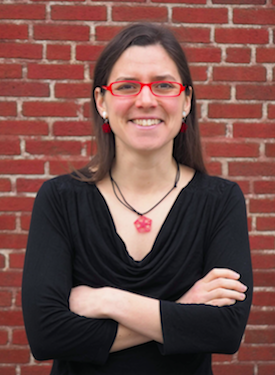
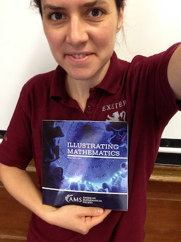
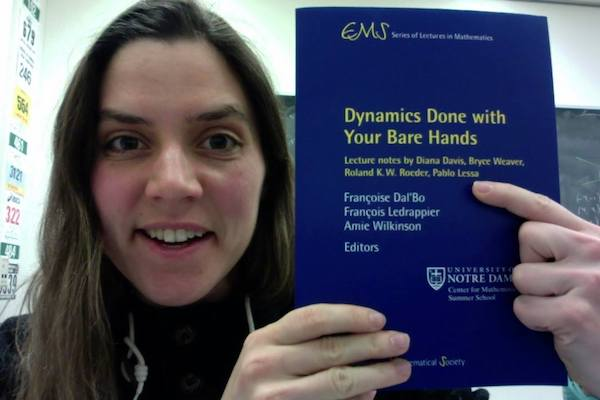
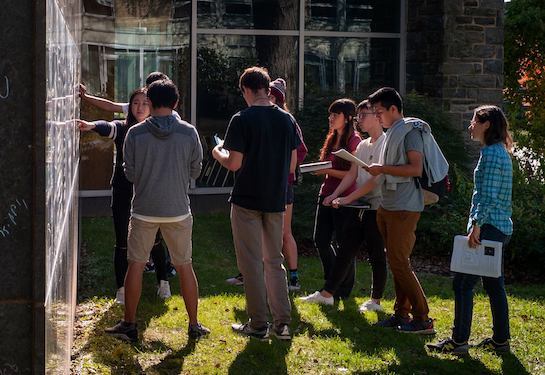
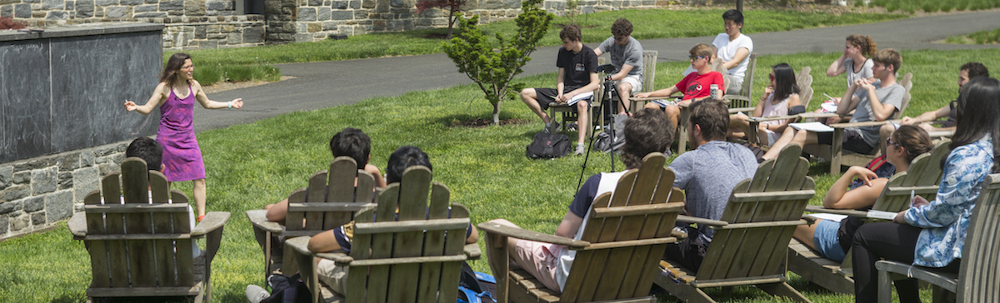

Diana Davis

"Mathematics is an art of human understanding. ... Mathematical concepts are abstract, so it ends up that there are many different ways they can sit in our brains. A given mathematical concept might be primarily a symbolic equation, a picture, a rhythmic pattern, a short movie -- or best of all, an integrated combination of several different representations." - William Thurston
Curriculum Vitae |
Research statement |
Teaching statement
Upcoming talks |
Videos |
Research |
Gallery |
Teaching |
Past talks |
Other worthwhile pursuits |
Bio |
Contact
Upcoming and recent talks and travel
Anja S. Greer Conference on Mathematics and Technology, Exeter, June 19-24
ICM, July 6-14
CIRM, July 5-16
Aix-Marseille University, Rauzy Seminar, July 8
Heidelberg University Community Seminar, July 18
Heidelberg University Fireside Chat, July 19
Bridges Conference, Helsinki, August 1-5
Videos of past talks
Periodic trajectories on the regular pentagon: versions for
non-mathematicians,
high school students,
math majors, and
experts.
Interval exchange transformations from tiling billiards, CIRM, February 2017
Three flavors of billiards, at Appalachian State University, April 2019
Cutting sequences on Bouw-Möller surfaces, ICERM, November 2013
Public lecture about Dance your PhD, Simons Center, July 2013
More videos my YouTube channel
On learning and
On respect, speeches explaining my pedagogical and classroom philosophies
My discussion-based math classes: one group discusses under a tree, and five groups discuss at the blackboards
My multivariable calculus lectures (40 classes from spring 2018)
How to make sure your bartender is fair
Linear Algebra Done Wrong (I am the bear)
Six examples of families of periodic paths on the pentagon -- so beautiful!
Curt McMullen’s Heidelberg Laureate lecture (he shows my video at 43:00)
Research
Papers:
- Sara Asgari, Quinn Basewitz, Ethan Bergmann, Jackson Brogsol, Nathaniel Cox, Diana Davis, Martina Kampel, Becca Keating, Katie Knox, Angus Lam, Jorge Lopez-Nava, Jennifer Paige, Nathan Pitock, Victoria Song, Dylan Torrance, Assessing congressional districting in Maine and New Hampshire, preprint (2020).
- Harrison Bray, Diana Davis, Kathryn Lindsey and Chenxi Wu, The shape of Thurston's master teapot, to appear in Advances in Mathematics (2020).
- Jon Chaika and Diana Davis, The typical measure preserving transformation is not an interval exchange transformation, submitted (2018).
- Diana Davis and Samuel Lelievre, Periodic paths on the pentagon, double pentagon and golden L, submitted (2019).
- Paul Baird-Smith, Diana Davis, Elijah Fromm, Sumun Iyer, Tiling billiards on triangle tilings, and interval exchange transformations, to appear in Bulletin of the London Mathematical Society (2020).
- Aaron Calderon, Solly Coles, Diana Davis, Justin Lanier, Andre Oliveira, How to hear the shape of a billiard table, accepted pending revision in Annales de l'Institut Fourier (2019).
- Diana Davis, W. Patrick Hooper, Periodicity and ergodicity in the trihexagonal tiling, to appear in Commentarii Mathematici Helvetici (2019).
- Diana Davis, Irene Pasquinelli, Corinna Ulcigrai, Cutting sequences on Bouw-Möller surfaces: an S-adic characterization, to appear in Annales scientifiques de l’Ecole normale superieure (2019).
- Diana Davis, Kelsey DiPietro, J.T. Rustad, Alexander St Laurent, Negative refraction and tiling billiards, Advances in Geometry, 18(2), 133-159 (2018).
- Keith Burns, Orit Davidovich, Diana Davis, Average pace and horizontal chords, The Mathematical Intelligencer, 39(4), 41-45 (2017).
- Diana Davis, Victor Dods, Cynthia Traub, Jed Yang, Geodesic trajectories on regular polyhedra, Discrete Mathematics, 340(1), 3183-3196 (2017).
- Diana Davis, Cutting sequences on translation surfaces, New York Journal of Mathematics, Volume 20, 399-429 (2014).
- Diana Davis, Cutting sequences, regular polygons, and the Veech group, Geometriae Dedicata, 162(1), 231-261 (2013).
- Diana Davis, Dmitry Fuchs, Sergei Tabachnikov, Periodic trajectories in the regular pentagon, Moscow Mathematical Journal, vol. 3 (2011).
- Joseph Corneli, Ivan Corwin, Stephanie Hurder, Vojislav Sesum, Ya Xu, Elizabeth Adams, Diana Davis, Michelle Lee, Regina Visocchi, Neil Hoffman, Double Bubbles in Gauss Space and Spheres, Houston Journal of Mathematics, 34(1) (2008).
- Elizabeth Adams, Ivan Corwin, Diana Davis, Michelle Lee, Regina Visocchi, Isoperimetric Regions in Gauss Sectors, Rose-Hulman Undergraduate Mathematics Journal, 8(1) (2007).
Books:
- Illustrating Mathematics, American Mathematical Society, 2020 (editor). Buy the book or preview the PDF.
- Dynamics Done with your Bare Hands, European Mathematical Society, 2017. Buy the book or get the PDF. Lecture notes by Diana Davis, Bryce Weaver, Roland Roeder and Pablo Lessa.
 
Pedagogy:

Exposition: I wrote a survey article aimed at high school students, and it was translated into German and published in several places:
- Billiards and Flat Surfaces, A Snapshot of Modern Mathematics for Oberwolfach, 2014 (English).
- Billard und ebene Flächen, Mitteilungen der DMV, Volume 23, Issue 3, September 2015, 151-155 (German).
- Billard und ebene Flächen, Bulletin of the Verein Schweizerischer Mathematik-und Physiklehrkräfte, January 2016, 8-14 (German).
My Erdos number is 4.
I have published articles in journals based in USA, Russia, Germany, France and Switzerland.
Gallery:


Click on a picture for the associated paper.
Teaching

Course web site for multivariable calculus, with links to videos of lectures, and handwritten lecture note handouts
Positions:
- Phillips Exeter Academy, Instructor in Mathematics, 2020--
- Swarthmore College, Visiting Assistant Professor, 2017-2020
- Williams College, Visiting Assistant Professor, 2016-2017
- Northwestern University, Postdoctoral Lecturer, 2013-2016
Why yes, I do create my own problem-based textbook for each (recent) course:
Here are impassioned talks I gave on the first day of class, explaining my educational philosophy and why this pedagogy treats students
with respect.
Here are some slides from a short talk I gave about this pedagogical method.
Courses taught:
- The Magic of Numbers (Northwestern)
- Combinatorial Game Theory (Northwestern)
- Calculus 1 (Swarthmore)
- Calculus 2 (Brown)
- Discrete mathematics (Swarthmore)
- Multivariable calculus without linear algebra (Brown, Williams)
- Multivariable calculus with linear algebra (Northwestern, Swarthmore)
- Introduction to Proof (Northwestern)
- Linear algebra (Brown)
- Applied Real Analysis (Williams)
- Real Analysis (Swarthmore)
- Billiards, Surfaces and Geometry (Williams)
Mini courses:
- Summer School on Boundaries and Dynamics, Notre Dame University
- Lines in positive genus: An introduction to flat surfaces, May 2015
- Anja S. Greer Conference on Mathematics and Technology, Phillips Exeter Academy
- How to write a problem-based curriculum: June 2017, 2019
- How to teach a discussion-based course: June 2019
- Greatest hits of higher mathematics: June 2012, 2013
- Exeter Mathematics Program: June 2012, 2013, 2015
Undergraduate thesis students:
- Megumi Asada, Williams College 2017
- Paul Baird-Smith, Williams College 2017
- Dylanger Pittman, Williams College 2017
AMS Spring Eastern Sectional Meeting, March 2022 (virtual)
IHES, informal seminar, March 2022
IST Austria, DynamIST seminar, March 2022
NCSSM
Teaching Contemporary Mathematics conference, February 2022 (virtual)
Williams College AWM panel, February 2022 (virtual)
SUNY Stony Brook math club, February 2022 (virtual)
Past talks: title link is to video of talk
CIRM, Differential Geometry, Billiards, and Geometric Optics, October 2021
UNC Greensboro, teaching colloquium, September 2021
PROMYS, panel on women and LGBTQ+ in math, August 2021
Hampshire College Summer Studies in Mathematics, July 2021
Williams College Math Camp, July 2021
Bates College, guest lecture in Mathematics for Social Justice class, May 11 (with Quinn Basewitz, Martina Kampel, Corinne Mulvey and Madeleine Ward)
California State University - San Bernardino Colloquium, April 16 (with Quinn Basewitz, Katie Knox and Corinne Mulvey)
Trinity University Majors Seminar, March 2021
University of Nebraska Groups, Semigroups and Topology, February 2021
Math Encounters, MoMath, February 2021
The italicized talks were cancelled due to COVID-19.
Brown University AWM, December 2020
Yale and Boston University math club, November 2020
Gathering 4 Gardner Celebration of Mind 2020, October 2020
University of Glasgow, Maths Week Scotland, LMS popular lecture, September 2020
Modern Math Workshop, SACNAS (Long Beach, CA), October 2020
PROMYS colloquium, July 2020
Anja S. Greer conference on Mathematics and Technology, Phillips Exeter Academy, June 2020
Nearly Carbon Neutral Geometry & Topology Conference, Moduli Spaces of Surfaces mini-session, June 2020
Geometry, Topology and Dynamics Seminar, Université Paris-Saclay, Orsay (en français), May 2020
Screening and panel discussion of Secrets of the Surface, Fields Institute, May 2020
Colloquium, St. Joseph's University, April 2020
Harvard Open Neighborhood Seminar, April 2020
Wesleyan University, A dynamical weekend at Wesleyan conference, April 2020
AMS Spring Eastern Sectional Meeting, Special Session on Geometric Dynamics and Billiards, March 2020
Swarthmore peer teaching opportunity, March 2020
Precalculus Conference at Rutgers, plenary speaker, March 2020
Trinity University, San Antonio, TX, March 2020
Ergodic theory seminar, Université Sorbonne (Jussieu), LPSM, Paris, March 2020
UMass Lowell, February 2020
University of Utah, Riemann surfaces and their moduli spaces RTG conference, February 2020
Episcopal Academy, Newtown Square, PA, February 2020
College of the Holy Cross, January 2020
Tufts University, dynamical systems seminar, December 2019
Providence College, Colloquium, December 2019
University of Oklahoma, plenary speaker, Math Day, November 2019
Bates College, Colloquium, November 2019
The College of New Jersey, Colloquium, October 2019
Brown University, Colloquium, October 2019
Duke University, Geometry/Topology seminar, September 2019
Yale University, SUMRY colloquium (with Nikki Kennedy and Beth Malmskog), July 2019
Redistricting teaching day, Tufts University, July 2019
Joint Meeting Brazil-France in Mathematics, IMPA (Brazil), July 2019
MathILy-Er Daily Gather, Bowdoin College, July 2019
Anja S. Greer conference on Mathematics and Technology, Phillips Exeter Academy (three talks), June 2019
University of Luxembourg (Luxembourg), June 2019
LG&TBQ Geometry, topology and dynamics conference, University of Michigan, June 2019 -- talk #100
National IBLT Conference 2019, Denver (interactive session -- a talk would be ironic), June 2019
Appalachian State University (two talks), April 2019
Ohio State University (two talks), April 2019
Maryland Dynamics Conference, April 2019
Institut des Hautes Etudes Scientifiques (France), March 2019
Rutgers University, Topology seminar, March 2019
Boston University, Dynamical systems seminar, January 2019 slides
Joint Mathematics Meetings (Baltimore), AMS special session on continued fractions, January 2019
Joint Mathematics Meetings (Baltimore), MAA invited paper session on Beauty and Art in Research Mathematics (organizer), January 2019
Fields Medal Symposium in honor of Maryam Mirzakhani, Fields Institute (Toronto, Canada), November 2018
Lunch talk on active learning pedagogy, October 2018 slides
AMS sectional meeting, University of Delaware, September 2018 slides
Swarthmore College, Colloquium, September 2018
William Rowan Hamilton Geometry & Topology Workshop, Trinity College Dublin (Ireland)
Aix-Marseille Université (France), July 2018
Teichmüller dynamics, mapping class groups, and applications, Institut Fourier (France), June 2018 slides
Drexel University, Colloquium, April 2018
AMS Eastern sectional meeting, Northeastern University, April 2018 slides
Boston College, Dynamics seminar, March 2018
University of Maryland - College Park, Dynamics seminar, March 2018
Swarthmore College, Faculty Lunch, January 2018
Joint Mathematics Meetings (San Diego), Research talk slides, January 2018
Joint Mathematics Meetings (San Diego), Teaching talk slides, January 2018
Tel Aviv University, January 2018 slides
University of Michigan, November 2017
Brown University, November 2017
Villanova University, colloquium, September 2017
Yale University, SUMRY colloquium, July 2017
Anja S. Greer conference on Mathematics and Technology, Phillips Exeter Academy (two talks)
City University of New York, dynamical systems seminar, April 2017
Swarthmore College, colloquium, February 2017
Siena College, February 2017
CIRM, Teichmüller space, polygonal billiards and interval exchanges (France), February 2017
University of Rhode Island, January 2017
Colby College, January 2017
Colorado College, January 2017 (two talks)
Joint Mathematics Meetings (Atlanta), January 2017
Lehigh University, Colloquium, November 2016
Williams College, science lunch, November 2016
Williams College, faculty seminar, November 2016
Smith College, Lunch talk series, September 2016
Smith College, Algebra/Geometry/Combinatorics seminar, September 2016
Williams College, SMALL Colloquium, July 2016
Williams College, FrankFest, February 2016
U.S. Naval Academy, January 2016
Colorado College, January 2016 (two talks) -- talk #50
Gonzaga University, January 2016
Joint Mathematics Meetings (Seattle), January 2016
Penn State University, Dynamical Systems Seminar, November 2015
CIRM, Dynamics and Geometry in the Teichmüller space (France), July 2015
Anja S. Greer conference on Mathematics and Technology, Phillips Exeter Academy (two talks)
Notre Dame, Summer school on boundaries and dynamics, May 2015: lecture notes are this book.
Midwest Women in Mathematics Symposium, March 2015
University of Minnesota, Combinatorics Seminar, February 2015
Northwestern University, Dynamical Systems Seminar, January 2015
Northwestern University, graduate student seminar, October 2014
Bard College at Simons Rock, September 2014
Midwest Women in Mathematics Symposium, April 2014
University of Utah, Max Dehn Seminar, April 2014
Northwestern Undergraduate Math Society, April 2014
University of Illinois at Urbana-Champaign, Ergodic Theory Seminar, April 2014
Oberwolfach (Germany), Workshop on Flat Surfaces and Dynamics on Moduli Space, March 2014
University of Chicago, Dynamics Seminar, March 2014
ICERM, Brown University, workshop on Geometric Structures in Low-Dimensional Dynamics, November 2013.
Simons Center for Geometry and Physics, Stony Brook, July 2013
Northwestern University, Dynamical Systems Seminar, October 2013
Anja S. Greer conference on Mathematics and Technology, Phillips Exeter Academy (two talks)
Yale University, Geometry & Topology Seminar, April 2013
University of Maryland College Park, Geometry & Topology Seminar, February 2013
Tufts University, Colloquium, February 2013
Harvard University, Geometry & Dynamics Seminar, February 2013
Indiana University, Geometry Seminar, January 2013
Southern Illinois University Edwardsville, January 2013
Joint Mathematics Meetings (San Diego), January 2013
Oxford University (UK), graduate student seminar, December 2012
Freie Universität Berlin (Germany), Discrete Geometry seminar, November 2012
Summer @ ICERM REU, Brown University, July 2012
Anja S. Greer conference on Mathematics and Technology, Phillips Exeter Academy (two talks)
Colby College, Colloquium, March 2012
Brown University, Graduate student seminar, March 2012
University of Bristol (UK), Dynamics Seminar, February 2012
Brown University, Graduate student seminar, April 2010
Brown University, Graduate student seminar, September 2011
Anja S. Greer conference on Mathematics and Technology, Phillips Exeter Academy (two talks)
Williams College, thesis defense, May 2007
Williams College, student colloquium, September 2006
HRUMC, April 2006
Phillips Exeter Academy, talk for math club, November 2005
MathFest, student talk, August 2005
Bates College, AMS regional meeting, June 2005
HRUMC, Williams College, April 2005
I have given talks in USA, England, France, Germany, Israel, Ireland, Canada, Luxembourg, Brazil and Austria.
I have given talks in CA, CO, CT, DE, IL, IN, ME, MD, MA, MI, MN, NC, NE, NH, NJ, NM, NY, OH, OK, PA, RI, TX*, UT, WA.
I am eager to give more talks. Invite me.
Other worthwhile pursuits (section under construction)
- Running
- Spinning cards and other three-dimensional paper crafts
- Building stuff
- Recipes
Brief professional bio (by request)
Diana Davis completed her Ph.D. at Brown University in 2013 under the direction of Richard Schwartz. She was a postdoc at Northwestern University for three years, followed by visiting professorships at Williams College and Swarthmore College. While a graduate student, she won an international award for the video she created to explain her PhD thesis result using colors and dance, which "went viral" in the mathematical community. She has published over a dozen papers, mostly on aspects of mathematical billiards and dynamical systems, and has given over 100 talks in 23 states and 9 countries. Davis is also an educational innovator, creating and teaching problem-centered, discussion-based math courses of all levels, and studying their pedagogical effectiveness. Outside of research and teaching, she enjoys long-distance running, recreational sailing, traveling, and thinking about how to build community and create a sustainable world.
Phillips Exeter Academy, Mathematics Department, 20 Main Street, Exeter NH 03833
ddavis(at)exeter.edu